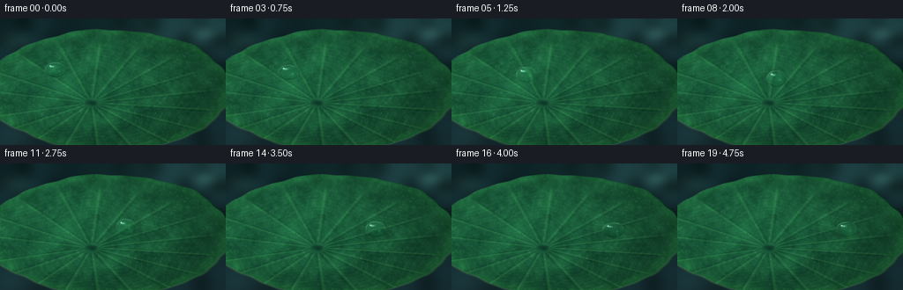
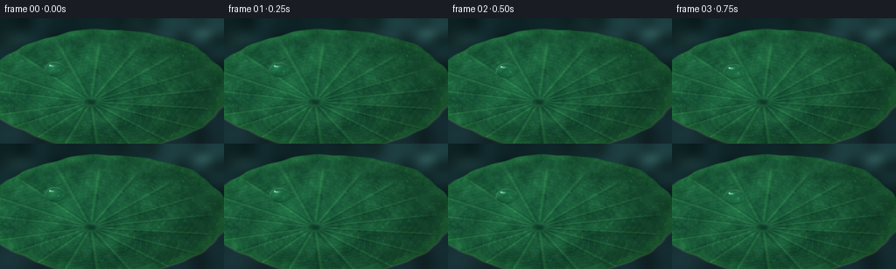

CODING AGENTS AS PIXEL WORLD MODELS
traex/GPT-5.6-Sol · phygen_036
点击播放 · 原生 RGB 像素
逐轮保存的候选
回放视频、检查图与代码变化。
每份候选均可单独播放。实际图片检查记录在下方工具轨迹中。
候选 01播放与检查图
点击播放 · 原生 RGB 像素


展开代码变化
--- 上一保存版本
+++ 本次保存版本
@@ -0,0 +1,190 @@
+from pathlib import Path
+import json
+import numpy as np
+from PIL import Image, ImageFilter
+import artifact_io
+
+ROOT = Path(__file__).resolve().parent
+SPEC = json.loads((ROOT / 'task_spec.json').read_text())
+W, H, N = SPEC['width'], SPEC['height'], SPEC['frames']
+S = 3
+w, h = W*S, H*S
+rng = np.random.default_rng(36091)
+
+def smoothstep(a,b,x):
+ q=np.clip((x-a)/(b-a),0,1)
+ return q*q*(3-2*q)
+
+def value_noise(HH,WW,gy,gx, seed, blur=0):
+ rr=np.random.default_rng(seed)
+ small=(rr.random((gy,gx))*255).astype(np.uint8)
+ im=Image.fromarray(small).resize((WW,HH),Image.Resampling.BICUBIC)
+ if blur: im=im.filter(ImageFilter.GaussianBlur(blur))
+ return np.asarray(im,dtype=np.float32)/255.
+
+def bilinear(img, xs, ys):
+ HH,WW=img.shape[:2]
+ xs=np.clip(xs,0,WW-1.001); ys=np.clip(ys,0,HH-1.001)
+ x0=np.floor(xs).astype(np.int32); y0=np.floor(ys).astype(np.int32)
+ x1=np.minimum(x0+1,WW-1); y1=np.minimum(y0+1,HH-1)
+ fx=(xs-x0)[...,None]; fy=(ys-y0)[...,None]
+ return (img[y0,x0]*(1-fx)*(1-fy)+img[y0,x1]*fx*(1-fy)+img[y1,x0]*(1-fx)*fy+img[y1,x1]*fx*fy)
+
+Y,X=np.mgrid[0:h,0:w].astype(np.float32)
+x=X/w; y=Y/h
+# Dark pond backdrop, soft and cool.
+pond_n=value_noise(h,w,9,14,81)
+pond=np.zeros((h,w,3),np.float32)
+pond[...,0]=8+9*pond_n+7*y
+pond[...,1]=24+19*pond_n+8*y
+pond[...,2]=25+22*pond_n+10*y
+# dim diagonal sky reflection
+sky=np.exp(-((x-.86)/.34)**2-((y-.06)/.20)**2)
+pond += sky[...,None]*np.array([14,23,22])
+# soft out-of-focus pond glints
+for cx,cy,rad,alpha in [(0.07,.17,.055,.14),(.91,.12,.035,.18),(.965,.69,.046,.12),(.08,.91,.07,.08)]:
+ g=np.exp(-((x-cx)**2+(y-cy)**2)/(2*rad*rad))
+ pond += g[...,None]*alpha*np.array([80,120,105])
+
+# Lotus leaf: large foreshortened peltate disc, irregular edge.
+lcx,lcy=.48,.56
+rx,ry=.545,.475
+ux=(x-lcx)/rx; uy=(y-lcy)/ry
+ang=np.arctan2(uy,ux); rho=np.sqrt(ux*ux+uy*uy)
+edge_radius=1 + .012*np.sin(7*ang+1.3)+.008*np.sin(13*ang-0.5)+.004*np.sin(29*ang)
+inside=rho < edge_radius
+edgeblend=np.clip((edge_radius-rho)/.012,0,1)
+# central petiole dimple is intentionally off-center in perspective
+vx=(x-.405)/rx; vy=(y-.665)/ry
+r=np.sqrt(vx*vx+vy*vy); theta=np.arctan2(vy,vx)
+large=value_noise(h,w,13,19,13)
+med=value_noise(h,w,35,57,17)
+fine=value_noise(h,w,90,150,29)
+# mottled emerald base, directional light from upper left
+light=1.0-.29*x-.12*y
+radshade=1-.24*rho**1.5
+mottle=.58*large+.30*med+.12*fine
+leaf=np.zeros((h,w,3),np.float32)
+leaf[...,0]=22+24*mottle
+leaf[...,1]=91+58*mottle
+leaf[...,2]=61+31*mottle
+leaf*= (light*radshade)[...,None]
+# warm transmitted tint toward thin rim
+rim=np.exp(-((rho-.965)/.055)**2)
+leaf += rim[...,None]*np.array([5,15,4])
+
+# Strong radial ribs from the peltate center, each modeled as highlight/shadow pair.
+vein_light=np.zeros((h,w),np.float32); vein_shadow=np.zeros_like(vein_light)
+ray_angles=np.array([-2.91,-2.56,-2.20,-1.84,-1.50,-1.18,-.86,-.54,-.21,.12,.47,.81,1.15,1.50,1.86,2.20,2.55,2.86])
+for a in ray_angles:
+ da=np.arctan2(np.sin(theta-a),np.cos(theta-a))
+ # perspective-correct angular distance, taper near dimple and rim
+ width=.010+.006*r
+ line=np.exp(-(da*r/(width+1e-5))**2)
+ active=smoothstep(.045,.13,r)*(1-smoothstep(.88,1.07,r))
+ vein_light += line*active
+ # offset dark side gives relief
+ sh=np.exp(-((da*r-.010)/(width*1.35+1e-5))**2)*active
+ vein_shadow += sh
+vein_light=np.clip(vein_light,0,1.35); vein_shadow=np.clip(vein_shadow,0,1.1)
+leaf += vein_light[...,None]*np.array([15,27,12])
+leaf -= vein_shadow[...,None]*np.array([7,14,7])
+# Fine polygonal / curved cross-veins, kept subtle.
+net=(np.cos(56*r + 4*np.sin(theta*5))**18)
+net*=smoothstep(.18,.32,r)*(1-smoothstep(.88,1.0,r))
+leaf += net[...,None]*np.array([2.5,7,3])
+# Dimple at stem attachment: dark bowl with a moist bright lip.
+dimple=np.exp(-(r/.073)**2)
+lip=np.exp(-((r-.064)/.021)**2)
+leaf -= dimple[...,None]*np.array([13,37,19])
+leaf += lip[...,None]*np.array([6,14,8])
+# microscopic waxy papillae / pores
+pores=(fine>.68).astype(np.float32)*(fine-.68)/.32
+leaf += pores[...,None]*np.array([5,8,5])
+
+base=pond*(1-edgeblend[...,None])+leaf*edgeblend[...,None]
+# underside rim, particularly lower edge
+lower=np.clip((y-.52)*4,0,1)
+outline=np.exp(-((rho-edge_radius)/.012)**2)*lower
+base += outline[...,None]*np.array([20,33,11])
+base=np.clip(base,0,255)
+
+# A few tiny stationary microbeads reinforce the superhydrophobic surface.
+def paint_microbead(im,cx,cy,rr):
+ yy,xx=np.mgrid[0:h,0:w]
+ dx=(xx-cx)/(rr+1e-6); dy=(yy-cy)/(rr*.78+1e-6); q=dx*dx+dy*dy
+ mask=np.clip((1-q)*4,0,1)[...,None]
+ shade=(10+16*np.clip(dy,0,1))[...,None]
+ im[:]=im*(1-.18*mask)+(im+shade)*(.18*mask)
+ hi=np.exp(-((dx+.35)**2+(dy+.35)**2)/.055)[...,None]
+ im[:]=np.clip(im+hi*np.array([95,115,102]),0,255)
+
+for px,py,rr in [(.82,.30,1.55),(.69,.75,1.15),(.275,.34,1.3),(.88,.57,.85),(.18,.69,.9),(.56,.24,.72)]:
+ if ((px-lcx)/rx)**2+((py-lcy)/ry)**2<.92:
+ paint_microbead(base,px*w,py*h,rr*S)
+
+# Render the moving main droplet as an optical lens over the static leaf.
+frames=[]
+for fi in range(N):
+ t=fi/(N-1)
+ ease=t*t*(3-2*t)
+ # graceful traverse, with a gentle downhill arc across the leaf
+ cx=(.245 + .505*ease)*w
+ cy=(.405 + .115*ease + .025*np.sin(np.pi*t))*h
+ # slight squash changes suggest rolling and surface tension
+ wob=np.sin(2*np.pi*(1.35*t+.08))
+ ax=(11.8 + .8*wob)*S
+ ay=(8.8 - .35*wob + .45*np.sin(np.pi*t))*S
+ dx=(X-cx)/ax; dy=(Y-cy)/ay
+ q=dx*dx+dy*dy
+ frame=base.copy()
+ # diffuse contact shadow, offset downslope
+ sh=np.exp(-(((X-(cx+2.3*S))/(ax*1.13))**2+((Y-(cy+3.0*S))/(ay*.73))**2)*2.25)
+ sh*=inside
+ frame*=1-(.23*sh)[...,None]
+ # bright focused caustic just beyond the lower-right contact edge
+ ca=np.exp(-(((X-(cx+3.1*S))/(ax*.55))**2+((Y-(cy+6.4*S))/(ay*.30))**2)*2.0)
+ frame += ca[...,None]*np.array([12,29,17])
+ # anti-aliased lens mask
+ mask=np.clip((1.03-q)*16,0,1)
+ interior=q<1.04
+ # Convex lens: magnified texture with chromatic cool shift and curved refraction.
+ rr=np.sqrt(np.maximum(q,0))
+ bulge=np.sqrt(np.clip(1-q,0,1))
+ # map pixels nearer droplet center; slight apparent vertical displacement
+ srcx=cx+(X-cx)*(.54+.10*q)-1.0*S*bulge
+ srcy=cy+(Y-cy)*(.54+.10*q)+1.9*S*bulge
+ refr=bilinear(base,srcx,srcy)
+ # glass Fresnel rim and internal illumination
+ top_light=np.clip(-.55*dx-.70*dy,0,1)
+ bottom_dark=np.clip(.45*dy+.12*dx,0,1)
+ lens=refr*(.96+.09*bulge[...,None])
+ lens += (9*top_light*bulge)[...,None]
+ lens -= (13*bottom_dark*(1-.35*bulge))[...,None]
+ # saturate green subtly through lens
+ lens[...,1]+=5*bulge; lens[...,2]+=2*bulge
+ frame=frame*(1-mask[...,None])+lens*mask[...,None]
+ # dark inner rim at bottom and luminous Fresnel rim elsewhere
+ rimband=np.exp(-((np.sqrt(np.maximum(q,0))-.93)/.055)**2)
+ lower_rim=rimband*np.clip(dy+.05,0,1)
+ frame-=lower_rim[...,None]*np.array([6,13,8])
+ upper_rim=rimband*np.clip(-.65*dy-.28*dx+.18,0,1)
+ frame+=upper_rim[...,None]*np.array([32,42,36])
+ # elongated skylight reflection, sharp pin highlight, and faint secondary glint
+ hi=np.exp(-(((dx+.30)/.34)**2+((dy+.43)/.18)**2)*2.4)
+ pin=np.exp(-(((dx+.47)/.095)**2+((dy+.52)/.11)**2)*2.0)
+ glint=np.exp(-(((dx-.35)/.16)**2+((dy-.18)/.20)**2)*2.0)
+ frame += hi[...,None]*np.array([75,92,87])
+ frame += pin[...,None]*np.array([150,163,154])
+ frame += glint[...,None]*np.array([18,25,22])
+ # tiny bright contact line along left foot
+ foot=np.exp(-((q-.985)/.026)**2)*np.clip(.55+dy,0,1)*np.clip(-dx+.5,0,1)
+ frame += foot[...,None]*np.array([14,25,17])
+ # extremely subtle moving sparkle in nearby wax crystals
+ frame=np.clip(frame,0,255).astype(np.uint8)
+ small=Image.fromarray(frame,'RGB').resize((W,H),Image.Resampling.LANCZOS)
+ frames.append(np.asarray(small,dtype=np.uint8))
+
+frames=np.stack(frames,axis=0)
+artifact_io.save(frames,ROOT)
+print('saved',frames.shape,frames.dtype,'range',frames.min(),frames.max())
可观测工具轨迹
实际执行的命令与返回图片。
命令 1exit 0
/bin/bash -lc "cat prompt.txt && printf '\\n---RULES---\\n' && cat GENERATION_RULES.md && printf '\\n---SPEC---\\n' && cat task_spec.json"
命令 2exit 0
/bin/bash -lc "find . -maxdepth 2 -type f -printf '%p\\n' | sort && printf '\\nTOOLS\\n' && command -v ffmpeg || true && command -v blender || true && command -v python3 || true"
命令 3exit 0
/bin/bash -lc 'cat artifact_io.py'
命令 4exit 0
/bin/bash -lc "cat > generate.py <<'PY'
from pathlib import Path
import json
import numpy as np
from PIL import Image, ImageFilter
import artifact_io
ROOT = Path(__file__).resolve().parent
SPEC = json.loads((ROOT / 'task_spec.json').read_text())
W, H, N = SPEC['width'], SPEC['height'], SPEC['frames']
S = 3
w, h = W*S, H*S
rng = np.random.default_rng(36091)
def smoothstep(a,b,x):
q=np.clip((x-a)/(b-a),0,1)
return q*q*(3-2*q)
def value_noise(HH,WW,gy,gx, seed, blur=0):
rr=np.random.default_rng(seed)
small=(rr.random((gy,gx))*255).astype(np.uint8)
im=Image.fromarray(small).resize((WW,HH),Image.Resampling.BICUBIC)
if blur: im=im.filter(ImageFilter.GaussianBlur(blur))
return np.asarray(im,dtype=np.float32)/255.
def bilinear(img, xs, ys):
HH,WW=img.shape[:2]
xs=np.clip(xs,0,WW-1.001); ys=np.clip(ys,0,HH-1.001)
x0=np.floor(xs).astype(np.int32); y0=np.floor(ys).astype(np.int32)
x1=np.minimum(x0+1,WW-1); y1=np.minimum(y0+1,HH-1)
fx=(xs-x0)[...,None]; fy=(ys-y0)[...,None]
return (img[y0,x0]*(1-fx)*(1-fy)+img[y0,x1]*fx*(1-fy)+img[y1,x0]*(1-fx)*fy+img[y1,x1]*fx*fy)
Y,X=np.mgrid[0:h,0:w].astype(np.float32)
x=X/w; y=Y/h
# Dark pond backdrop, soft and cool.
pond_n=value_noise(h,w,9,14,81)
pond=np.zeros((h,w,3),np.float32)
pond[...,0]=8+9*pond_n+7*y
pond[...,1]=24+19*pond_n+8*y
pond[...,2]=25+22*pond_n+10*y
# dim diagonal sky reflection
sky=np.exp(-((x-.86)/.34)**2-((y-.06)/.20)**2)
pond += sky[...,None]*np.array([14,23,22])
# soft out-of-focus pond glints
for cx,cy,rad,alpha in [(0.07,.17,.055,.14),(.91,.12,.035,.18),(.965,.69,.046,.12),(.08,.91,.07,.08)]:
g=np.exp(-((x-cx)**2+(y-cy)**2)/(2*rad*rad))
pond += g[...,None]*alpha*np.array([80,120,105])
# Lotus leaf: large foreshortened peltate disc, irregular edge.
lcx,lcy=.48,.56
rx,ry=.545,.475
ux=(x-lcx)/rx; uy=(y-lcy)/ry
ang=np.arctan2(uy,ux); rho=np.sqrt(ux*ux+uy*uy)
edge_radius=1 + .012*np.sin(7*ang+1.3)+.008*np.sin(13*ang-0.5)+.004*np.sin(29*ang)
inside=rho < edge_radius
edgeblend=np.clip((edge_radius-rho)/.012,0,1)
# central petiole dimple is intentionally off-center in perspective
vx=(x-.405)/rx; vy=(y-.665)/ry
r=np.sqrt(vx*vx+vy*vy); theta=np.arctan2(vy,vx)
large=value_noise(h,w,13,19,13)
med=value_noise(h,w,35,57,17)
fine=value_noise(h,w,90,150,29)
# mottled emerald base, directional light from upper left
light=1.0-.29*x-.12*y
radshade=1-.24*rho**1.5
mottle=.58*large+.30*med+.12*fine
leaf=np.zeros((h,w,3),np.float32)
leaf[...,0]=22+24*mottle
leaf[...,1]=91+58*mottle
leaf[...,2]=61+31*mottle
leaf*= (light*radshade)[...,None]
# warm transmitted tint toward thin rim
rim=np.exp(-((rho-.965)/.055)**2)
leaf += rim[...,None]*np.array([5,15,4])
# Strong radial ribs from the peltate center, each modeled as highlight/shadow pair.
vein_light=np.zeros((h,w),np.float32); vein_shadow=np.zeros_like(vein_light)
ray_angles=np.array([-2.91,-2.56,-2.20,-1.84,-1.50,-1.18,-.86,-.54,-.21,.12,.47,.81,1.15,1.50,1.86,2.20,2.55,2.86])
for a in ray_angles:
da=np.arctan2(np.sin(theta-a),np.cos(theta-a))
# perspective-correct angular distance, taper near dimple and rim
width=.010+.006*r
line=np.exp(-(da*r/(width+1e-5))**2)
active=smoothstep(.045,.13,r)*(1-smoothstep(.88,1.07,r))
vein_light += line*active
# offset dark side gives relief
sh=np.exp(-((da*r-.010)/(width*1.35+1e-5))**2)*active
vein_shadow += sh
vein_light=np.clip(vein_light,0,1.35); vein_shadow=np.clip(vein_shadow,0,1.1)
leaf += vein_light[...,None]*np.array([15,27,12])
leaf -= vein_shadow[...,None]*np.array([7,14,7])
# Fine polygonal / curved cross-veins, kept subtle.
net=(np.cos(56*r + 4*np.sin(theta*5))**18)
net*=smoothstep(.18,.32,r)*(1-smoothstep(.88,1.0,r))
leaf += net[...,None]*np.array([2.5,7,3])
# Dimple at stem attachment: dark bowl with a moist bright lip.
dimple=np.exp(-(r/.073)**2)
lip=np.exp(-((r-.064)/.021)**2)
leaf -= dimple[...,None]*np.array([13,37,19])
leaf += lip[...,None]*np.array([6,14,8])
# microscopic waxy papillae / pores
pores=(fine>.68).astype(np.float32)*(fine-.68)/.32
leaf += pores[...,None]*np.array([5,8,5])
base=pond*(1-edgeblend[...,None])+leaf*edgeblend[...,None]
# underside rim, particularly lower edge
lower=np.clip((y-.52)*4,0,1)
outline=np.exp(-((rho-edge_radius)/.012)**2)*lower
base += outline[...,None]*np.array([20,33,11])
base=np.clip(base,0,255)
# A few tiny stationary microbeads reinforce the superhydrophobic surface.
def paint_microbead(im,cx,cy,rr):
yy,xx=np.mgrid[0:h,0:w]
dx=(xx-cx)/(rr+1e-6); dy=(yy-cy)/(rr*.78+1e-6); q=dx*dx+dy*dy
mask=np.clip((1-q)*4,0,1)[...,None]
shade=(10+16*np.clip(dy,0,1))[...,None]
im[:]=im*(1-.18*mask)+(im+shade)*(.18*mask)
hi=np.exp(-((dx+.35)**2+(dy+.35)**2)/.055)[...,None]
im[:]=np.clip(im+hi*np.array([95,115,102]),0,255)
for px,py,rr in [(.82,.30,1.55),(.69,.75,1.15),(.275,.34,1.3),(.88,.57,.85),(.18,.69,.9),(.56,.24,.72)]:
if ((px-lcx)/rx)**2+((py-lcy)/ry)**2<.92:
paint_microbead(base,px*w,py*h,rr*S)
# Render the moving main droplet as an optical lens over the static leaf.
frames=[]
for fi in range(N):
t=fi/(N-1)
ease=t*t*(3-2*t)
# graceful traverse, with a gentle downhill arc across the leaf
cx=(.245 + .505*ease)*w
cy=(.405 + .115*ease + .025*np.sin(np.pi*t))*h
# slight squash changes suggest rolling and surface tension
wob=np.sin(2*np.pi*(1.35*t+.08))
ax=(11.8 + .8*wob)*S
ay=(8.8 - .35*wob + .45*np.sin(np.pi*t))*S
dx=(X-cx)/ax; dy=(Y-cy)/ay
q=dx*dx+dy*dy
frame=base.copy()
# diffuse contact shadow, offset downslope
sh=np.exp(-(((X-(cx+2.3*S))/(ax*1.13))**2+((Y-(cy+3.0*S))/(ay*.73))**2)*2.25)
sh*=inside
frame*=1-(.23*sh)[...,None]
# bright focused caustic just beyond the lower-right contact edge
ca=np.exp(-(((X-(cx+3.1*S))/(ax*.55))**2+((Y-(cy+6.4*S))/(ay*.30))**2)*2.0)
frame += ca[...,None]*np.array([12,29,17])
# anti-aliased lens mask
mask=np.clip((1.03-q)*16,0,1)
interior=q<1.04
# Convex lens: magnified texture with chromatic cool shift and curved refraction.
rr=np.sqrt(np.maximum(q,0))
bulge=np.sqrt(np.clip(1-q,0,1))
# map pixels nearer droplet center; slight apparent vertical displacement
srcx=cx+(X-cx)*(.54+.10*q)-1.0*S*bulge
srcy=cy+(Y-cy)*(.54+.10*q)+1.9*S*bulge
refr=bilinear(base,srcx,srcy)
# glass Fresnel rim and internal illumination
top_light=np.clip(-.55*dx-.70*dy,0,1)
bottom_dark=np.clip(.45*dy+.12*dx,0,1)
lens=refr*(.96+.09*bulge[...,None])
lens += (9*top_light*bulge)[...,None]
lens -= (13*bottom_dark*(1-.35*bulge))[...,None]
# saturate green subtly through lens
lens[...,1]+=5*bulge; lens[...,2]+=2*bulge
frame=frame*(1-mask[...,None])+lens*mask[...,None]
# dark inner rim at bottom and luminous Fresnel rim elsewhere
rimband=np.exp(-((np.sqrt(np.maximum(q,0))-.93)/.055)**2)
lower_rim=rimband*np.clip(dy+.05,0,1)
frame-=lower_rim[...,None]*np.array([6,13,8])
upper_rim=rimband*np.clip(-.65*dy-.28*dx+.18,0,1)
frame+=upper_rim[...,None]*np.array([32,42,36])
# elongated skylight reflection, sharp pin highlight, and faint secondary glint
hi=np.exp(-(((dx+.30)/.34)**2+((dy+.43)/.18)**2)*2.4)
pin=np.exp(-(((dx+.47)/.095)**2+((dy+.52)/.11)**2)*2.0)
glint=np.exp(-(((dx-.35)/.16)**2+((dy-.18)/.20)**2)*2.0)
frame += hi[...,None]*np.array([75,92,87])
frame += pin[...,None]*np.array([150,163,154])
frame += glint[...,None]*np.array([18,25,22])
# tiny bright contact line along left foot
foot=np.exp(-((q-.985)/.026)**2)*np.clip(.55+dy,0,1)*np.clip(-dx+.5,0,1)
frame += foot[...,None]*np.array([14,25,17])
# extremely subtle moving sparkle in nearby wax crystals
frame=np.clip(frame,0,255).astype(np.uint8)
small=Image.fromarray(frame,'RGB').resize((W,H),Image.Resampling.LANCZOS)
frames.append(np.asarray(small,dtype=np.uint8))
frames=np.stack(frames,axis=0)
artifact_io.save(frames,ROOT)
print('saved',frames.shape,frames.dtype,'range',frames.min(),frames.max())
PY
python3 generate.py"命令 5exit 0
/bin/bash -lc "python3 - <<'PY'
import numpy as np
from PIL import Image
from pathlib import Path
p=np.load('pixels.npz')['pixels']
print('pixels',p.shape,p.dtype)
fs=sorted(Path('frames').glob('*.png'))
print('frames',len(fs),Image.open(fs[0]).mode,Image.open(fs[0]).size)
a=np.stack([np.asarray(Image.open(x),dtype=np.int16) for x in fs])
d=np.mean(np.abs(np.diff(a,axis=0)),axis=(1,2,3))
print('adjacent mean abs deltas:',np.round(d,3))
print('outputs:',[(x.name,x.stat().st_size) for x in [Path('pixels.npz'),Path('inspection.png'),Path('index.html')]])
PY"保存候选 1 份；完成命令 5 次；可验证图片返回 0 张。原始 API 响应与完整日志保留在本地。